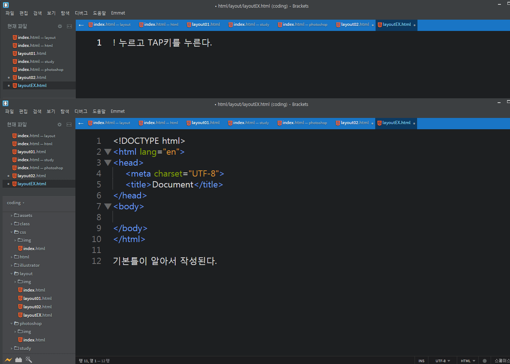

2020.03.11
브라켓 확장기능 및 단축기 설명
- Emmet : editor plugin으로써 단축키를 이용해 HTML, XML, XSL 코딩 속도를 비약적으로 향상시켜주는 툴입니다.
- Custom Work : 상단에 탭 메뉴 기능
- Beauty : 코드 정렬
- Indect Guide : 코딩 라인 가이드
- 브라켓 : 코드수정
- 파일질라 : 파일전송
단축키
- 복사하기 : Ctrl + c
- 붙혀놓기 : Ctrl + v
- 전체 복사하기 Ctrl + A
- 4칸 이동하기 : Tad
- 4칸 반대로 이동하기 : Shift - Tad
- 화면 크기 늘리기 Ctrl + +
- 화면 크기 줄이기 Ctrl + -
포토샵 단축기
- 새로운 파일 여는 단축기 : Ctrl + N
- 저장 : Ctrl + Shift + S
- 웹용 저장 : Ctrl + Shift + Alt + S
- 사진 크기 조절하는 법 : Ctrl + T(Shift 누르고)
- li 여러개 만드는법 : li>ui*5+Tap
사진 저작권 없이 다운받을수 있는 무료 사이트
- https://unsplash.com/
여러가지 색깔 편한게 코드로 쓸수있는 있는 사이트
- https://materializecss.com/color.html
무료로 폰트 쓸수있는 사이트
- https://noonnu.cc/
2020.03.12
오늘의 배움(코딩에 관하여) 정리 및 포토샵 단축기
2020.03.13
오늘의 배움
- float: left : 옛날 방식인데 박스를 옆으로 이동이 가능함(단 모든 박스에 영역이 미쳐 힘듬)
- text-transform: uppercase; : 영어(소문자)를 대문자로 바꿔주는 수식어
- HTML 파일 작성 팁
- ! -> Tap 기본 HTML틀이 작성됨(EMMET기능) 
- EntityCode를 사용하면 사이트에 기호 언어 사용 가능하다.
- Float을 사용하면 Height를 인식을 못하는 버그가 생긴다. (똑같이 Float을 사용하면 적용된다.)
- Float으로 적용된 버그는 Clear를 사용하면 버그가 사라진다. 단 간편한 레이어일 경우 사용한다.
2020.03.16
오늘의 내용 정리
- ! + TAP : 브라켓 처음 만들떄 쭉 나오는거
- ol + tqp : ul은 점으로 표현되지만 ul대신 ol을 쓰면 숫자로 표기됨
- m0-a : margin: 0 auto;로 표기됨
- div#이름 : CSS에서 id를 언급할 땐 #을 사용
- Shift+Home : 선택된 줄(글씨 맨뒤로 보내고) 전부다 표시
- Shift+End : 선택된 줄 취소
2020.03.17
오늘의 배움
구글 크롬 확장기능
백그라운드 rgba
background: rgba(r,g,b,a(0~1)); rgba값으로 색 설정id 속성과 class 속성의 언급 차이
2020.03.18
오늘의 배움
table 태그를 사용하여 작성한다. 이 테이블에 대한 스타일이 준비되어 있으며, 스타일 클래스를 지정하여 디자인을 설정할 수 있다. 테이블의 기본 표시
스트라이프(줄무늬) 표시
table class="table table-striped" : tbody 안에 표시되는 짝수행과 홀수행에 배경색을 변경하는 스트라이프 넣는다. table-striped 클래스를 추가한다. border
table class="table table-bordered" : 이는 전체 사각 테두리로 둘러싸고, 각 항목에 테두리를 긋고 표로 만든다. table-borderd 클래스를 추가한다.바깥쪽과 열 사이에도 선을 그린다.hover
table class="table table-hover" : 마우스 포인터가 있는 행의 배경을 바꾸어 눈에 띄도록 하기 위한 것이다. table-hover 클래스를 추가한다.마우스 포인터를 올리면 배경색이 변한다.행 높이 줄여서 표시
class="table table-condensed"
table class="table tablebordered table-hover"라고 하면, 테이블을 표 형태로 표시하고, 더욱 마우스 포인터가 있는 행을 두드러지게 하는 것이다.(tr / tr)태그는 행(가로)를 나타냄td rowspan=2 : 요소에서 rowspan속성은 아래쪽으로 셀을 합치는 속성이고, 속성값 "2"는 태그를 포함하여 2줄을 합치라는 뜻2020.03.19
오늘의 배움
text-decoration(밑줄) : 선으로 텍스트를 꾸밀 수 있게 해주는 속성이다.
a태그 속성
a: 링크가 걸려있는 부분의 기본 속성a:visited=해당 링크를 방문한 적이 있을 때a:active=링크를 클릭하고 있을 때a:hover=마우스를 오버할때
2020.03.20
오늘의 배움
h1~h6 요소 정리
"h1"이 가장 높고 "h6"은 가장 낮습니다.2020.03.23
오늘의 배움
웹 표준 사이트
<span> 태그
-
<span>태그는 HTML 문서에서 인라인 요소들을 하나로 묶을 때 사용 -
<span>요소는 그 자체만으로는 어떠한 의미도 가지지 않지만, class나 id와 같은 전역 속성과 함께 사용하여 스타일링을 위해 요소들을 그룹화하거나 lang속성과 같은 속성값을 공유하는 데 유용하게 사용 -
<span>요소는 <div>요소와 매우 비슷하게 사용되지만, <div>요소는 블록 요소인데 반해 <span>요소는 인라인 요소
div:last-child (가상 클래스)
- 기존에 있던 선택자(타입 선택자, id 선택자, class 선택자, 전체 선택자 등)로는 구체적인 스타일을 줄 수가 없으므로 가상 클래스로 어떤 요소의 n번째 줄만 선택해서 스타일을 줄 수가 있음
:first-child부모 요소 안에 있는 첫번째 자식만을 선택할 수 있는 선택자:last-child부모 요소 안에 있는 마지막 자식만을 선택하는 선택자:nth-child()부모 요소 안에 n번째만을 선택하는 선택자(IE9부터 적용)
ul>li*7>a[href="#"] 와 ul>li*7>a[#]은 같다
<a>태그에href="#"가 입력된 상태로 써짐
list-style: none;
<ul>,<ol>,<menu>와 같은 블릿기호를 없앰
text-indent: -9999px;
text-indent는 들여쓰기를 하는 속성. 이것을 이용하여text-indent: -9999px;를 한다면 alt가 없는 background-image나 이미지 스프라이트에 alt를 주는 효과를 줄 수가 있다.
2020.03.24
오늘의 배움
.column.col$*2 (Tab)
-
<div> class="column col1"></div>
<div> class="column col2"></div> - $는 순차적인 번호가 설정 된다.
- $$일 경우에는 01부터 시작
.column.col$*2>h3+p (TAB)
-
<div class="column col1">
<h3></h3>
<p></p>
</div>
<div class="column col2">
<h3></h3>
<p></p>
</div>
2020.03.25
오늘의 배움
<img src="img/notice01.jpg" alt>
- img 태그는 의미가 있을 경우에 사용. 그렇지만 의미가 없는 사진을 사용할 경우에는 alt만 남겨두면 된다. 그러면 시각 리더기가 읽지않는다.
2020.03.26
오늘의 배움
Bootstrap
- 부트스트랩(Bootstrap) : 웹사이트를 쉽게 만들 수 있게 도와주는 HTML, CSS, JS 프레임워크이다. 하나의 CSS로 휴대폰, 태블릿, 데스크탑까지 다양한 기기에서 작동하며 다양한 기능을 제공하여 사용자가 쉽게 웹사이트를 제작, 유지, 보수할 수 있도록 도와준다.
2020.03.29
사이트
최신 공지사항 만들기
-
HTML
<div class="notice5"> <h4>최신 <em>공지사항</em></h4> <ul> <li><a href="#">JPE, PNG, GIF의 차이점은 무엇인가요?</a><span>2020.03.25</span></li> <li><a href="#">Ul 디자인과 Ux 디자인의 차이점을 설명하세요?</a><span>2020.03.25</span></li> <li><a href="#">인터렉션 디자인의 핵심은 무엇이라고 생각하나요?</a><span>2020.03.25</span></li> </ul> <a href="#" class="more" title="더보기">더보기</a> </div> -
CSS
.notice5 {position: relative; border: 1px solid #ccc; margin-top: 15px;} .notice5 h4 {border-bottom: 1px solid #ccc; padding: 8px 10px; color: #2c94c4;} .notice5 h4 em {color: #cf3292;} .notice5 ul {padding: 10px; } .notice5 li {overflow: hidden; padding-left: 8px; background: url(../img/dot.gif) no-repeat 0 8px;} .notice5 li a {float: left; width: 70%; overflow: hidden; text-overflow: ellipsis; white-space: nowrap;} .notice5 li span {float: left; width: 30%; text-align: right;} .notice5 .more {position: absolute; right: 9px; top: 9px;} - border: 1px solid #ccc; : 박스 만들기
- border-bottom: 1px solid #ccc; : 밑선 만들기
- position: absolute; right: 9px; top: 9px; : 위치 초기화 후 지정
- float: left; : 가로정렬
- overflow: hidden; : float 깨짐 형상 방지로 부모한테 넣자!
- text-overflow: ellipsis; : 지정된 칸 넘어간 긴 글시 ...으로보이기
- white-space: nowrap; : 길고 긴 텍스트 문자 1줄로 만들기
- margin-top: 15px; : 위쪽 여백
- padding-left: 8px; : 이미지와의 간격
- background: url(../img/dot.gif) no-repeat 0 8px; : 아이콘
no-repeat : 이미지 반복여부 결정(no)를 주면 반복안함!
2020.03.30
<input>태그의 주의점
- 시각 리더기에서 읽지 못할 수 있기 때문에 <input>태그는 <label>태그와 항상 같이 사용하여 웹 접근성을 지켜야 한다.
- 속성값 checkbox는 텍스트와 같이 있을 경우 정렬이 맞지 않는다. 그래서 위치조절을 해야 하는데 checkbox는 이동이 되지 않는다. 따라서 텍스트에 변화를 줘서 위치를 조절해야 한다.
HTML
- A > B =
- width = margin + padding + border
- alt + ↑↓ : 줄 위아래로 이동
- alt + shift + 화살표위아래 : 줄 복사
- ctrl + / : 주석표시
- alt + shift+ i : 드래그 한 줄 끝에 동시입력 li
VSC 단축키
- ctrl + d : 드래그 여러개
- alt + click : 커서 여러개 지정해서 동시입력
- alt + ↑↓ : 줄 위아래로 이동
- alt + shift + 화살표위아래 : 줄 복사
- ctrl + / : 주석표시
- alt + shift+ i : 드래그 한 줄 끝에 동시입력
- alt + shift+ drag : 기억안나요 누가 좀 알려주세요
포토샵
- GTQ볼때 window - workspace - reset 하고 시작
2020.03.31
CSS로 Responsive Layout 만들기
Visual Studio Code 단축키
- 줄 복사 : Alt + Shift + 방향키
- 줄 이동 : Alt + 방향키
- 다중 커서 : Alt + 좌클릭
- 같은 단어 선택 : Ctrl + D (선택할 만큼 누르기)
반응형 사이트
- 반응형을 만들때는 창이 작아 질수록 가로 스크롤이 생기면 안된다. 그래서 미디어 쿼리를 사용하는 것이다.
가로 스크롤이 생기지 않게 하기 위해서는 px값을 %값으로 변형해야 한다.
CSS
- 위드값 = 마진 + 패딩 + 보더 를 합친값
반응형을 만들때는 창이 작아 질수록 가로 스크롤이 생기면 안된다. 그래서 미디어 쿼리를 사용하는 것이다.
가로 스크롤이 생기지 않게 하기 위해서는 px값을 %값으로 변형해야 한다.
2020.04.01
오늘의 배움
브라켓 확장기능
- 메타데이터 : 콘텐츠 언어
- html lang= 브라우저 언어
- 조건식 주석 표식은 익스플로러에서만 활용 가능
- a태그가 있다면 속성을 직접 줘야지 반응함.
- row : 반응형 만들 때 여백을 위해 추가하는 박스
레이아웃 보기 VIEW
2020.04.02
.shadow33 {box-shadow: 0px 0px 5px 1px rgba(0,0,0,0.8) inset;}
각 속성값 의미
- 0px : x축
- 0px : y축
- 5px : blur 효과
- 1px : 스프레이드(그림자 길이)
- inset : 그림자 내부 적용
div {transition: color 0.3s;}속성 의미
- 컬러의 변화를 0.3초 동안 점진적으로 변하게 하는 것
2020.04.06
사이트
Visual Studio Code 단축키
- Ctrl + H : 단어 선택 후 원하는 글자로 바꾸기
상위 (부모)박스에 폰트사이즈를 가지고 오는것; em>
2020.04.07
- last-child : 부모 요소 안에 있는 마지막 자식만 선택하여 설정한다.
- last-of-type : 같은 유형의 맨 마지막 형제를 선택하여 설정한다.
- ex) .nav > div:last-of-type {width:20%} nav의 div박스 마지막 자식에게만 width값을 20%로 준다.
- aria-hidden : 속성을 사용하여 시각적으로 숨겨지지 않는 콘텐츠를 보조 기술에서 제외하기 위한 메커니즘을 제공한다. 접근성을 위해 넣어줌
2020.04.08
- nth-child(3n) : 3의 배수를 지정해서 설정한다.
- 상위 (부모)박스에 폰트사이즈를 가지고 오는것; em>
2020.04.09
CSS3의 transform 속성은 Flash 나 JavaScript를 사용하지 않고 요소를 애니메이션 시키거나 시각적 및 상호 작용의 효과를 풍부하게 제공하고 있습니다.
그 중 translate () 함수는 기본적으로 X 축과 Y 축을 따라 지정된 거리만큼 요소를 이동시킬 때 사용합니다.
기본 코딩은 그렇게 복잡하지 않습니다.
transform：translate(x, y)、translateX()、translateY()、translateZ()、translate3d() 등의 함수로 이동 거리를 지정합니다.
2020.04.13
오늘의 배움
사이트
- <aspect ratio> : ratio는 비율을 뜻하며, 이미지나 동영상을 비율대로 줄이거나 늘리는 데 사용한다.
- <picture> : <img> 요소의 다중 이미지 리소스(multiple image resources)를 위한 컨테이너를 정의할 때 사용한다.
- <srcset> : 브라우저에 우리가 사용할 수 있는 이미지가 무엇인지, 크기는 무엇인지를 알려주는 것이다.
2020.04.14
오늘의 배움